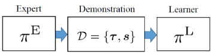
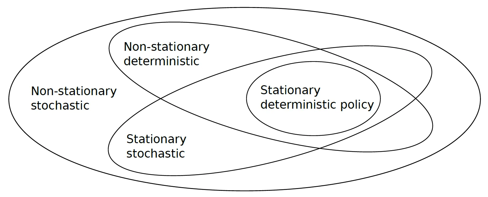

Imitation Learning Algorithm을 위한 설계
-
Imitation LearningReinforcement Learning의 Reward Function 접근
- IL을 Demo와 Reward Signal에 접근 여부에 대해 둘로 구분할 수 있음
-
Reward Signal 접근 가능
-
Demonstration과 Reward Signal 사용
-
RL만으로 문제를 해결할 수 있음
- Demo 사용 시, RL에서 비용이 큰 Global Exploration을 줄여 속도 향상
- 명확한 기준이 있는 문제에서 train 속도 향상
-
Demonstration 이후 IL을 수행해 Policy 초기화
→ RL 수행으로 Policy 개선- Expert와 유사하거나, 더 좋은 Policy train 가능
- 초기 Action Error가 누적되는 Compounding Error 방지 가능
-
-
Reward Signal 접근 불가능
- Demonstration만 사용
-
- IL을 Demo와 Reward Signal에 접근 여부에 대해 둘로 구분할 수 있음
-
Desired Behavior에 대한 간결한 Description
-
효율적인 data train을 위해서, Action을 표현하는 가장 간결한 형태를 찾아야 함
-
Behavioral Cloning- Feature에서 Trajectory 또는 Action으로 직접 Mapping하는 것
-
Inverse Reinforcement Learning(IRL)-
Expert Demonstration에서 Reward Function을 추정하는 개념
-
Action이 Long-horizon Planning을 필요로 하고, 여러 선택지를 고려할 경우
- Long-horizon Planning : 장기적인 계획
-
최적화 문제나 Planning 문제의 해로 Policy를 표현하는 것이 더 간결할 수 있음
-
-
Inverse Optimal Control (IOC)
- Expert Action이 어떤 최적화 문제의 해라고 보고 Cost Function을 역추정하는 방법
- IRL과 유사하나, RLMDP의 관점인지 Optimal Control의 관점인지에 따라 상이
-
-
시스템 동역학에 대한 접근
-
Task를 현실적으로 해결하려면, System Dynamics에 대한 정보가 필요함
- 단, 동역학을 train하는 것은 어려운 문제임
-
Model-Based
- 시스템 동역학을 이미 알고 있거나, train해 사용
-
Model-Free
- 시스템 동역학을 train하지 않고, PolicyController를 train
-
-
Policy 간 Similarity 측정
- Reward Function을 명확하게 정의하기 어려운 경우
- Expert Policy와 Learner Policy가 얼마나 비슷한지 판단할
Surrogate Similarity Measure가 필요함-
Surrogate Similarity Measure: 대체 유사도 기준 -
Expert와 Learner의 Policy의 Action의 유사도를 비교
- 개별 Action 수준에서, Expert와 Learner의 선택 비교 가능
-
-
Feature
- 원하는 Action을 표현할 수 있는 적절한 feature를 선택하는 것이 중요함
- train Complexity를 제한하면서, Task를 해결하기 충분한 정보를 포함해야 함
- DL처럼 깊은 표현 기법을 사용하면, 사람이 feature를 직접 설계하지 않아도 data로부터 feature의 일부 또는 대부분을 자동으로 추출할 수 있음
-
Policy 표현
- 원하는 Action을 잘 획득할 수 있도록, Policy를 어떻게 표현할지 정해야 함
ex) Neural Network, Linear Function 등 - 어떤 수준의 Task를 train할지 결정해야 함
- Policy 표현의 Complexity가 증가하면, 필요 train data와 시간이 증가함
- Policy Represetation의 Complexity : 얼마나 복잡한 구조로 표현하는가
- 원하는 Action을 잘 획득할 수 있도록, Policy를 어떻게 표현할지 정해야 함
Behavioral Cloning and Inverse Reinforcement Learning
- IL의 두 가지 주요 접근 방법
- 어떤 방식으로 원하는 Action을 더 간결하게 표현할 수 있는지에 따라 결정
-
Behavioral Cloning-
State와 Context를 입력받아 Control Input을 직접 출력하도록 학습하는 방식
- State → Action mapping을 직접 학습
- mapping이 새로운 상황에도 잘 맞으면, 유효한 Policy
- State → Action mapping을 직접 학습
-
ActionTrajectory를 직접 출력하도록 Policy를 train
-
시연된 행동을 재현하는 Policy를 얻기 위한 방법 중 하나
-
- State-Action Pair와 Context가 포함된 Demostration Data
- : State
- : Context
- (label) : Control Input
-
- State, Context를 입력 받아 Policy가 를 출력하도록 만듦
-
-
이러한 Policy는 지도학습으로 학습 가능
-
-
Inverse Reinforcement Learning-
Expert의 행동을 설명하는 Reward Function을 추정, Reward를 최대화하는 Policy를 구함
- 추정한 Reward Function이 행동을 잘 표현하면, 유효한 Policy
-
Reward Signal이 주어지는 경우, Expected Return을 최대화하는 Policy를 구할 수 있음
-
-
: Policy 에 대한 Expected Return
-
: 후보 Policy
-
Reward Function은 정확히 알 수 없고, Demo로부터 Reward Function을 복원해야함
-
-
Model-Free 및 Model-Based IL Methods
-
System Dynamics접근 여부는 중요한 설계 결정 중 하나임System Dynamics: 현재 State와 Action에 따라 미래 State 변화를 나타낸 관계
-
시스템 동역학이 비선형적이거나 시스템 동역학을 알지 못해도, 동역학을 직접 학습해 활용하면, data를 효율적으로 학습할 수 있음
- 그러나, 시스템 동역학을 학습하는 것이 어려움
-
Model-Based
-
시스템의 동역학을 나타내는 Forward Model을 학습하거나 사용해, Expert Demonstration을 재현하는 Policy를 학습하는 방법
-
Forward Model:System Dynamics를 학습한 모델 -
Underactuated Robot에서 중요함
- 도달 가능한 State가 제한되기 때문에 실제 실행 가능한 trajetory를 위해선 시스템 동역학을 반드시 고려해야 함
-
시스템 동역학을 미리 알고 있으면, 더 쉽게 IRL을 할 수 있음
- 특정 Policy를 실행했을 때 Learner가 어떤 trajectory 결과를 만들지 미리 예측할 수 있음
-
즉, 현재 State 에서 Action 를 수행했을 때, 다음 State 이 어떻게 되는지 알 수 있음
-
그러나, 시스템 동역학을 정확히 학습하는 것은 어려움
-
- 특정 Policy를 실행했을 때 Learner가 어떤 trajectory 결과를 만들지 미리 예측할 수 있음
-
-
수집 →
System Dynamics학습 → 예측 → PlanningPolicy 학습- Planning : 최종 State 또는 Horizon까지 가능한 최적 Action Sequence를 찾는 과정
Horizon: 고려할 최대 timestep 수
- Planning : 최종 State 또는 Horizon까지 가능한 최적 Action Sequence를 찾는 과정
-
-
Model-Free
-
Forward model을 학습하거나 사용하지 않는 방법
-
Expert의 Action을 재현하는 Policy를 학습하려고 시도
- 따라서,
System Dynamics를 계산할 필요 없음- 단, Policy 내에 암묵적으로 Dynamics가 반영될 수 있음
- 따라서,
-
많은 로봇 시스템에선, 각 joint를 제어하기 위한
Position Controller나Velocity Controller가 제공됨Position Controller: Goal Joint Position을 입력 받아, joint가 해당 position에 도달하도록 제어하는 알고리즘Velocity Controller: Goal Joint Velocity을 입력 받아, joint가 해당 velocity로 움직이게 제어하는 알고리즘
-
이는
Fully Actuated System으로 간주할 수 있고, Smooth Trajectory를 사용하면 Motion Planning에서System Dynamics의 영향을 거의 고려하지 않아도 됨Fully Actuated System: 모든 DoF를 독립적으로 직접 제어할 수 있는 Actuator가 존재하는 시스템
-
Expert Demonstration이 존재하면, 거의
Fully Actuated System된 로봇 시스템의 Motion Planning에는 Model-Free IL을 상대적으로 쉽게 적용할 수 있음Behavioral Cloning은 주로 Model-Free 방식으로 연구되어 왔음
-
수집 → PolicyValue Function 학습 → 선택
- : timestep 의 reward
Value Function: 앞으로 얻을 Expected Return 함수
-
Underactuated System의 Motion Planning에선 시스템 동역학을 고려해 실제로 실행 가능한 trajectory를 planning해야 하는 경우가 많음
| 참고 : DoF-
모든 DoF를 제어할 수 없기 때문에 도달 가능한 State가 제한되어 있어 동역학을 고려하지 않고 State → Action을 직접 학습하는
Model-Free BC로 trajectory 학습이 어려울 수 있음
ex) CartPole에서 Pole의 각도는 제어할 수 없음. Cart를 움직여 간접 제어해야 함 -
그러나 최근 IRL 연구에서는, 동역학 model을 명시적으로 학습하지 않고도,
Learner Policy를 반복적으로 수행하는Iterative Rollout을 통해 Underactuaed System의 Skill을 학습할 수 있음을 시사함
| 참고 : Policy
-
-
| Model-free | Model-based | |
|---|---|---|
| 장점 | 시스템 동역학을 학습추정하지 않고 Policy를 학습할 수 있음 | - 학습 과정에서 data를 효율적으로 사용할 수 있음 - 학습된 policy가 시스템 동역학을 충족 |
| 단점 | - 미래 State 예측이 어려움 - 시스템 동역학은 결과 Policy에서 암묵적으로 고려됨 | - 어려운 모델 학습 - 큰 계산 비용 |
Observability
-
IR의 주요 목표는 Expert의 행동을 재현하는 것임
- Expert의 policy를 알 수 없기 때문에, demonstration을 통해 policy를 학습함
-
과정

- : Expert Policy
- : Demonstration Dataset
- : Expert의 Trajectory
- : Demonstration의 Context
- : Learner Policy
-
Trajectories in Fully Observable Settings
- 시스템과 state를 완벽하게 관측할 수 있는 경우
-
- : timestep 에서 state. 는 마지막 timestep
- : timestep 에서 시스템에 가하는 Action. 는 마지막 timestep
ex) Teleoperated System (단, noise가 있을 수 있음)
- : timestep 에서 시스템에 가하는 Action. 는 마지막 timestep
- : timestep 에서 state. 는 마지막 timestep
-
Trajectories in Partially Observable Settings
- 시스템과 state를 부분적으로 관측할 수 있는 경우
-
demonstaration에서 Expert의 Action이 관찰되지 않고, 시스템의 state만 주어지는 경우
ex) 인간의 동작을 휴머노이드에 전송하는 경우
-
시스템 State 자체를 부분적으로만 관측할 수 있는 경우
- trajectory가 시스템의 Partial Observation Sequence로 주어짐
-
-
- : Partial Observation
- : Observation Function
- 가 선형 함수인 경우, 행렬곱으로 Observation을 표현할 수 있음
-
- : Observation Matrix
-
- 가 선형 함수인 경우, 행렬곱으로 Observation을 표현할 수 있음
-
-
Differences in observability between the expert and the learner
-
IR에서, Expert와 Learner는 종종 환경을 다르게 관찰함
ex) Expert는 System Embodiment의 차이로 Learner보다 더 많은 sensor 정보를 얻음- System Embodiment : 로봇이 가진 sensor, actuator, joint 구조, 물리적 형태 등 실제 구현상 신체적 특성
ex) Learner는 Expert보다 더 정확하고 빠른 속도로 sensor 정보를 기록할 수 있음
- System Embodiment : 로봇이 가진 sensor, actuator, joint 구조, 물리적 형태 등 실제 구현상 신체적 특성
-
Expert가 Partially Observe
- System State
- Expert 자신의 Control Input(Action)
- Learner의 Observation
-
Learner가 Partially Observe
- System State
- Expert의 Observation
- Expert의 Control Input(Action)
- Learner 자신의 Control Input
-
특정 Task문제에 어떤 IR 접근법을 사용할지 고려해야 함
- Expert가 System State를 Partially Observe하는 경우
- Expert의 Demonstration 자체가
Sub-optimal할 수 있음Sub-optimal: 최적이 아닌 해Action
- Expert의 Demonstration 자체가
- Expert가 Learner를 관찰하는 경우
- Learner는 자신의 Embodiment에 대해 Expert보다 많은 정보를 가질 수 있음
- Embodiment : Agent가 환경과 상호작용하기 위해 갖는 물리적 신체 구조와 감각action 능력의 구성
ex) 사람이 Kinesthetic Teaching으로 로봇에게 물체를 잡는 방법을 보여줄 때 Expert가 로봇이 실제로 무엇을 관측하고 있는지 알지 못한다면, 해당 demonstration은 Learner에게 최적이 아닐 수 있음
| 참고 : Kinestheitic Teaching
- Embodiment : Agent가 환경과 상호작용하기 위해 갖는 물리적 신체 구조와 감각action 능력의 구성
- Learner는 자신의 Embodiment에 대해 Expert보다 많은 정보를 가질 수 있음
- Expert가 System State를 Partially Observe하는 경우
-
IR에서, Expert가 최적으로 행동한다고 가정하는 경우가 많음
- 그러나 이는, Partial Observation에 기반 경우가 많음
- 즉, 해당 행동은 Expert가 확인할 수 있는 정보를 기준으로 했을 때 최적일 수 있음
ex) Expert가 장애물을 피했는데, Learner는 장애물을 인식하지 못하는 경우 - 또한 Learner가 Expert의 Observation을 Partially Observe하는 경우, Learner는 Expert가 왜 해당 행동을 했는지 알지 못하므로, policy를 잘못 추론할 수 있음
- 즉, 해당 행동은 Expert가 확인할 수 있는 정보를 기준으로 했을 때 최적일 수 있음
- 그러나 이는, Partial Observation에 기반 경우가 많음
-
Policy Representation in Imitation Learning
-
IL에서 policy representation은 중요한 설계 중 하나임
-
Levels of Policy Abstraction
- IL에선 여러 유형의 Policy Abstraction이 사용될 수 있음
-
Symbolic-Level Abstraction-
Policy를
SymbolOptionSkill의 High-Level로 표현함Symbol: 물체StateActionTask 등을 나타내는 Discrete 의미 표현Option: 여러 timestep 동안 내부 Policy를 실행하는 High-Level Action 단위Skill: 특정 Sub-task를 수행하기 위해 학습된 Policy 또는 Action 모듈
-
Task-Level Planning-
High-Level로 표현된 Task들을 이용해, 현재 State와 목표를 확인하고 어떤 Task를 어떤 순서로 수행할지 결정하는 과정
-
- : Task의 Horizon
- : timestep 에서 State
- (Context) : 현재 Task의 조건이나 목표 등 정보
- : i번째 Option
- : A를 B로 mapping함
-
Task-Level에서 Abstraction을 사용하면 복잡한 Task를 여러 개의 단순한 movement sequence로 Modeling할 수 있음
- Behavioral Cloning 방법들은, Task를 Movement Primitive들의 Sequence로 Modeling함
-
-
-
Trajectory-Level Abstraction-
Policy가 Context 를 입력받아 전체 Trajectory 를 직접 출력하도록 표현하는 방식
-
Trajectory Planning- Policy가 Context 를 Trajectory 로 mapping함
- DMP, ProMP 등의 Behavioral Cloning 방법들은, Trajectory 기반 Policy를 학습
| 참고 : Movement Primitive > Dynamic Movement Primitives, Movement Primitive > ProMP (Probabilistic Movement Primitives)
- Policy가 Context 를 Trajectory 로 mapping함
-
-
Action-State Space Abstraction-
Policy가 시스템의 State 와 Context 를 입력받아 Control Input 를 직접 출력하도록 표현하는 Low-Level 표현 방식
- 각 timestep마다 현재 Action 하나를 결정함
- Trajectory 전체나 Option Sequence를 출력하는 것이 아님
- 각 timestep마다 현재 Action 하나를 결정함
-
-
| Abstraction Level | Policy |
|---|---|
| Symbolic-Level | |
| Trajectory-Level | |
| Action-State Space |
-
Hierarchical vs Monolithic Policies
| 참고 : Policy > Hierarchical Policy, Policy > Monolithic Policy-
하나의 Policy Abstraction Level만 고려하는 경우, Policy는 Non-hierearchicalMonolithic이 됨
-
Monolithic Policy 하나만으로 복잡한 Task를 학습하려면, 신경망처럼 복잡한 Policy Representation을 사용해야 함
-
Hierarchical Policy는 서로 다른 Abtraction Level들을 결합해 학습할 수 있음
- Lower-Level Policy는 기본적인 Primitive Behavior를 수행하는 방법을 학습함
- Upper-Level Policy는 여러 Lower-level Policy들을 어떤 순서로 실행할지 계획함
-
여러 Lower-Level Policy들의 Sequence로 분해할 수 있음
- Upper-Level과 Lower-Level을 동시에 학습하는 것은 어려움
-
-
Feedback vs Open-Loop/Feedback-Free Policies
| 참고 : Policy > Feedback Policy, Feedback-free Policy- State Feedback 관점에 따라 Policy를 2가지로 구분할 수 있음
- State Feedback : Policy가 Action을 결정할 때, 현재 시스템 State를 다시 관측해 사용하는지로 Policy를 구분하는 관점
-
Feedback Policy
- Robotics에서는
Manipulator에 가할 Torque Input을 결정하는 Policy를 학습하는 경우가 많음-
Manipulator: 로봇 팔 -
이때 Feedback Policy를 사용함
- Torque를 조금만 다르게 가해도 다음 State가 크게 달라질 수 있으므로,
Sequential Decision Making에서 현재 시스템 State를 계속 확인하면서 다음 Torque를 결정해야 함Sequential Decision Making: 현재 결정이 다음 State와 이후 Action에 영향을 주는 상황에서, 여러 timestep에 걸쳐 연속적으로 의사결정하는 과정
- Torque를 조금만 다르게 가해도 다음 State가 크게 달라질 수 있으므로,
-
- Robotics에서는
-
Open-Loop/Feedback-Free Policy
-
초기 입력을 기반으로 Control Input 또는 원하는 Action을 결정함
- 따라서, Policy가 한 번 실행되면, 환경으로부터의 Feedback을 사용하지 않음
-
주어진 상황에 대해, 전체 Trajectory를 한 번에 결정하는
One-shot Decision Making문제를 다룰 수 있음One-shot Decision Making: 주어진 초기 상황을 바탕으로 여러 단계의 ActionTrajectory를 한 번에 결정하고, 실행 중 변경하지 않는 방식
-
예외
- Online Trajectory Update
- Task 실행 중 Trajectory를 planning갱신하는 방식
- 관측된
Pixel Value를 직접 입력으로 사용해 Trajectory를 학습하고, 실행 중 원하는 Trajectory를 oneline으로 지속적으로 갱신함- 즉, 다음 action이 아니라 Trajectory 자체를 다시 수정하는 방식
- Online Trajectory Update
-
- 동일한 시스템에서 서로 다른 Policy를 서로 다른 level에서 함께 사용할 수 있음
- State Feedback 관점에 따라 Policy를 2가지로 구분할 수 있음
-
Stationary and Stochasticity of Policies
| 참고 : Policy > Stationary Policy, Policy > Non-stationary Policy, Policy > Deterministic Policy, Policy > Stochastic Policy

-
Stationary 관점에서는 Policy가 시간에 의존하는지에 따라 Stationary Policy와 Non-stationary Policy로 구분할 수 있음
-
Stochasticity 관점에서는 Policy를 Deterministic Policy와 Stochastic Policy로 구분 가능함
-
Stationary vs Non-Stationary Policies
-
Nonstationary Policy
- 시간에 의존하는 Policy
- Trajectory-based Policy는 현재 timestep이나 Trajectory의 phase에 따라 policy가 달라지므로, Non-Stationary Policy인 경우가 많음
ex) 로봇 팔이 복잡한 움직임을 수행할 때, 시연된 속도를 유지하는 경우
-
Stationary Policy
- 현재 시스템 State에만 의존함
- 서로 다른 timestep에서도 유사한 State가 나타날 수 있는 문제에서 사용됨
ex) 레이싱카가 도로를 이탈하는 경우
-
-
Deterministic Policy
-
- Trajectory Planning에 대한 deterministic policy의 Trajectory
- Dynamics movement primitive 같은 Behavior Cloning 방식의 경우 해석 가능
-
- Action-State space에서 Context , Control Input
-
- State와 Action을 전부 관찰할 수 있는 경우 Trajectory 의 분포
-
보통 MDP와 같은
Non-adversarial Sequential Decision Making Problem에선, Optimal Policy가 Deterministic Policy인 경우가 많음Non-adversarial Sequential Decision Making Problem: 다른 Agent가 방해하지 않고, 환경 안에서 여러 timestep에 걸쳐 연속적으로 Action을 결정하는 문제
-
MMP 같은 IRL 방법들은 Demonstration으로부터 복원한 Reward Function을 이용해 deterministic policy를 구함
-
Behavioral Cloning 방법들도 Deterministic Policy를 사용함
-
-
Stochastic Policy
-
- Acion-State space에서 State , Context 에 대한 확률 분포에 따른 Control Input
- 는 Control Input 의 Conditional Distribution 와 를 나타냄
- Conditional : 조건부
- 해당 확률 분포가
Delta Function으로 주어지면, 해당 policy는 Deterministic Policy가 됨Delta Function: 사실상 하나의 Action에 확률을 몰아주는 경우
-
- Stochastic Policy를 사용하고, State와 Action이 Fully Observe한 경우 Trajectory
-
- 확률 분포
-
Expert의 Stochastic Behavior를 Modeling하기 위해 사용됨
-
IRL 방법들에선 Stochastic Behavior를 표현하기 위해 Stochastic Policy를 사용함
-
Uncertainty를 도입해 Iterative 방법에서 Parameter Space를 Exploration하는데 유용함
-
Mobel-Based Behavioral Cloning 방법과 IRL 방법들에서 사용하고, 반복 학습을 통해 System Dynamics를 학습함
-
-
Behavior Descriptors
-
IL에선 반드시 Action을 정량화해, Expert의 Action과 Learner의 Action의 차이를 측정해야 함
- 이를 위해서, Expert와 Learner가 서로 무엇이 일치해야 하는지 고려해야 함
-
State-Action Distribution
-
State-Action 입력 pair로 구성된 Dataset 가 주어졌을 때
- State와 Control Input의 Joint Distribution , 또는 State 가 주어졌을 때 Control Input 의 Conditional Distribution 를 modeling할 수 있음
-
Short-term Behavior만 설명하므로, State-Action Distribution만 맞추면 Long-term Behavior와 불일치할 수 있음
-
-
Trajectory Feature Expectation
| 참고 : Trajectory > Trajectory Feature Expectation- Long Horizon에 걸쳐 Expert와 Learner의 행동을 일치시키려면,
Trajectory Feature를 고려해야 함-
Trajectory Feature: 하나의 Trajectory에서 추출한 feature의 집합
ex) 이동 거리, 평균 속도, 목표와의 거리, 특정 state 방문 횟수 등 -
Trajectory 자체와, 이에 대한 Observation은 확률적이고, noise가 포함되어 있으므로 개별 Trajectory 하나보다 Trajectory Feature의 Expectation을 사용함
-
Trajectory Expectation : Trajectory 자체의 기대값
-
Trajectory Feature Expectation : Trajectory Feature의 기대값
-
Expectation은 개별 sample보다 noise의 영향을 덜 받음
-
-
-
Learner Policy에 대한 Trajectory Feature의 Expectation
-
: Learner Policy에 의해 유도된 Trajectory Distribution
-
: Trajectory 의 Feature Vector
-
: 에 따라 발생 가능한 Trajectory Feature의 평균값
- Feature Function을 로 설정하면,
- 즉, Feature Function이 Trajectory 자체를 반환하면 Trajectory Expectation이 Feature Expectation이 됨
- Feature Function을 로 설정하면,
-
-
Trajectory Dataset 이 주어진 경우
- Trajectory Feature Expectation 근사
-
Feature Expectation Matching은 Behavioral Cloning과 IRL에서 모두 사용됨
-
- Long Horizon에 걸쳐 Expert와 Learner의 행동을 일치시키려면,
-
Trajectory Feature Distribution
- Trajectory Feature에 대한 Distribution 는 Expert와 Learner 간 행동을 일치시키기 위해 자주 사용됨
- 단순히 First Moment만 맞추는 것이 아니라, Higher-order Moment도 맞출 수 있음
- First Moment : Distribution의 mean
- Higher-ordre Moments : 퍼짐이나 모양까지 나타냄
ex) Paraschos et al., 2013, Englert et al., 2013과 같은 Behavioral Cloning 방법, Arenz et al., 2016과 같은 IRL 방법
- 단순히 First Moment만 맞추는 것이 아니라, Higher-order Moment도 맞출 수 있음
- Trajectory Feature에 대한 Distribution 는 Expert와 Learner 간 행동을 일치시키기 위해 자주 사용됨
Information Theoretic Understanding of Feature Matching in Imitation Learning
-
IL은 시연된 행동과 학습한 행동의 차이를 최소화하는 policy를 찾는 문제임
- 이를 위해, 많은 IR 방법들은 시연된 행동을 Parameterized Policy Space에 Projection함
| 참고 : Projection-
Parameterized Policy Space : Policy의 Parameter 값을 바꿔가며 표현할 수 있는 모든 가능한 Policy들의 집합
-
Demonstration을 Parameterized Policy의 Manifold 위에 Projection하려면, Demonstration의 Distribution과 Parameterized Policy의 Distribution 사이의 관계를 고려해야 함
| 참고 : Manifold
-
- 이를 위해, 많은 IR 방법들은 시연된 행동을 Parameterized Policy Space에 Projection함
-
Information Theoretic Understanding of Imitation Learning Algorithms for Trajectory Learning
-
Parameter Vector 를 갖는 Policy 에 의해 유도되는 Trajectory Distribution
-
Supervised Learning 방법은, 주어진 train data의 Maximum Likelihood를 기반으로 해를 구함
| 참고 : Probability & Likelihood > Maximum Likelihood (최대 우도법)- 이는 KL Divergence를 최소화하는 것과 동일함
| 참고 : KL Divergence
- 이는 KL Divergence를 최소화하는 것과 동일함
-
-
: Expert Policy에 의해 유도된 Trajectory들의 Empirical Distribution
- Empirical Distribution : 실제로 관측하거나 수집한 sample data의 빈도값을 바탕으로 구성한 확률 분포
-
Data Manifold → Policy Model Manifold로 Projection
- Expert Data Distribution 와 가장 가까운 Learner Policy Distribution 를, Learner가 표현할 수 있는 Distribution들 중에서 찾음
-
-
-
그러나, KL Divergence는 비대칭적이므로, 를 최소화하는 것은 해당 식을 최소화하는 것과 동일하지 않음
- 즉,
-
Policy Model Manifold → Data Manifold로 Projection
-
-
-
M-Projection이 최소화되도록 하는 Parameter 를 학습하는 것이 목표
| 참고 : Projection > M-Projection-
-
-
Objective Function
-
-
: 에 대한 Expectation. Demonstration Trajectory로 추정 가능
-
전개한 결과 수식
-
는 와 독립적이므로, 를 최소화하는 것이 Expected Log Likelihood 를 최대화하는 것으로 수행할 수 있음
- : Expert의 Tracjectory들에 Learner가 얼마나 높은 확률을 부여하는지
- 즉, KL을 크게 하려면 독립항은 크게, 는 크게 설정해야 함
ex) DMP의 Least Squares Solution, ProMP의 EM, SEDS의 EM
-
-
-
- M-Projection을 최소화하는 것은, Expert Demonstration과 Maximum Likelihood를 수행하는 것과 동일함
-
-
Maximum Likelihood로 얻은 해와 Maximum Entropy Principle로부터 얻은 해 사이에는 밀접한 관계가 있음
| 참고 : Entropy-
평균 Feature Constraint 가 있다고 가정
- 이를 만족하는 Distribution 중 Maximum Entropy를 갖는 Distribution을 선택하면, Exponential Family Parameterization을 얻을 수 있음
| 참고 : Exponential-
Exponential Family Parameterization : 확률 분포를 와 를 이용해 지수함수로 표현하는 방법
-
- : Parameter
- : Trajectory Feature
- : Feature들의 가중합
- :
- : 전체 확률의 합/적분이 1이 되도록 만드는 Normalization Constant
-
- 이를 Maximum Entropy 문제에 대입하고, 에 의존하지 않는 항들을 무시해 얻은
Dual Objective FunctionDual Objective Function: Constraint가 있는 최적화 문제를 Lagrange Multipier를 사용해 다른 형태의 최적화 문제로 변환했을 때 얻는 Objective Function
| 참고 : Lagrange Multiplier
- 이를 Maximum Entropy 문제에 대입하고, 에 의존하지 않는 항들을 무시해 얻은
-
-
앞선 를 에 대해 미분한 Gradient
-
즉,
- : Expert의 Trajectory Feature Expectation
- : Learner의 Trajectory Feature Expectation
-
-
이 최대가 되는 최적점 에선 Gradient가 0이므로
-
즉, Expert의 Trajectory Feature와 Learner의 Trajectory Feature가 평균적으로 같아져야 함
-
Exponential Family를 가정했을 때
- Exponential Family를 가정 : 를 Exponential Family 형태로 제한해 만 학습함
- : Maximum Likelihood로 얻은 최적값
- : Feature Constraint로 을 설정한 Maximum Entropy Distribution의 최적값
- IRL에서, Cost Function Matching이나 적절한 Policy를 자동으로 구성할 때 사용할 수 있음
- 즉, 동일한 Distribution 를 얻게 됨
-
-
-
- 이를 만족하는 Distribution 중 Maximum Entropy를 갖는 Distribution을 선택하면, Exponential Family Parameterization을 얻을 수 있음
-
Maximum Likelihood와 Maximum Entropy의 해는 동일한 와 동일한 Trajectory Distribution 를 제공함
- 이 관계를
Maximum Likelihood/Maximum Entropy Duality라고 함
| 참고 : Optimization > Duality
- 이 관계를
-
즉, M-Projection, Maximum Likelihood, Maximum Enctropy가 Exponential Family라는 조건 내에서, 같은 최적의 Distribution을 가짐
-
-
Maximum Entropy Principle은, Regularized Form(정규화된 식)으로 고려하는게 유용함
-
즉, Maximum Entropy Distribution 대신 시연자의 Feature를 일치시키면서
Prior Distribution에 대한 KL Divergence가 최소가 되는 Distribution을 찾고자 함-
즉,
-
이를 다시 Lagrange Multiplier를 사용해 다음 식으로 변환함
-
- 기존 Maximum Entropy 는 각 Trajectory의 확률을 라는 Feature 기반 점수로 결정함
- 즉, 어떤 Trajectory가 얼마나 자주 발생했는지, 기존 Policy가 어떤 Trajectory를 선호했는지 등에 대한 정보가 없음
→ 를 곱함
- 즉, 어떤 Trajectory가 얼마나 자주 발생했는지, 기존 Policy가 어떤 Trajectory를 선호했는지 등에 대한 정보가 없음
- 따라서, 각 Trajectory의 최종 확률은 두 요소를 곱한 값으로 결정됨
- 기존 기준 확률
- Feature에 따른 재가중
- 재가중 (Reweighting) : 상대적인 확률 재조정
- 기존 Maximum Entropy 는 각 Trajectory의 확률을 라는 Feature 기반 점수로 결정함
-
기존 Trajectory Distribution e^{w^\top \phi(\tau)}$만큼 재가중한 Distribution
- Prior Distribution이 Uniform인 경우
- 이므로,
→
- 이므로,
- Prior Distribution이 Uniform인 경우
-
-
Prior Distribution- 현재 Feature Matching을 통해 Distribution을 수정하기 전, 기준으로 설정하는 Trajectory Distribution
- Trajectory 전체에 대한 Probability Distribution을 설정함
- 설정
- 초기 Learner Policy가 만든 Trajectory Distribution
- 직전 iteration의 Learner Policy가 만든 Distribution
- NominalReference Policy 또는 Cotroller가 만드는 Distribution
- NominalReference Policy : 새 Policy를 학습하거나 최적화할 때 기준으로 사용하는, 이미 존재하는 Policy
ex) 이전 Iteration에서 학습한 Learner Policy, Baseline Policy, Pre-trained Policy 등 - Controller : 제어 알고리즘
- NominalReference Policy : 새 Policy를 학습하거나 최적화할 때 기준으로 사용하는, 이미 존재하는 Policy
- Prior Knowledge가 없는 경우,
Uniform Prior- Prior Knowledge : 이미 알고 있는 정보
ex) 특정 움직임은 물리적으로 불가능함, 기존 Policy 성능 등 Uniform Prior: 모든 가능한 Trajectory에 균등한 확률을 부여한 Distribution
- Prior Knowledge : 이미 알고 있는 정보
-
-
Regularized Maximum Entropy는 기존 Maximum Entropy에 Prior Distribution 를 추가해, Expert Feature는 맞추면서도 기존에 알고 있던 Trajectory Distribution의 정보도 유지하는 방식임
-
-
Feature Matching Constraint가 어느 정도의 Bound인지 알고 있다면, Maximum Entropy Problem은 Duality를 통해
Regularized Likelihood문제로 변환됨Regularized Likelihood-
- : Dataset
- : 일 때, 가 관측될 likelihood
- (Reularization Function) : 에 따른 Penalty
- (Regularization Strength) : Lagrange Multiplier로 유도된 규제 상수
-
가 지나치게 커지거나, 복잡해지는 것을 억제하는 Penalty를 추가함
-
-
Regularized Likelihood는 Dual Parameter에 대한 Prior 를 사용하는
MAP Estimation과 동등함
| 참고 : Optimization > Duality-
: Dual Parameter 에 대한 Prior Distribution
-
MAP Estimation: Data의 Likelihood와 Parameter의 Prior을 고려해 가장 가능성이 높은 Parameter를 찾는 방법
| 참고 : MAP -
그러나, Maximum Entropy Principle을
I-Projection과 혼동해서는 안 됨
| 참고 : Projection > I-Projection ()-
I-Projection-
-
를 통해 data가 주어짐
-
시연자의 Feature를 matching하지 않음
- Feature Matching하면, M-Projection에 기반한 알고리즘
-
는 Expert의 Trajectory Distribution이라 계산하기 어려우므로, IL에서 I-Projection 수행이 어려움
- IL의 방법들은,
M-Projection및 Maximum Entropy Principle 관련 방법들임 - 이는, 대부분
Model-Free Method와Model-Based Method에 해당함-
Model-Free Method- Standard Supervised Learning에 기반함
- 시스템 동역학을 알 필요없음
- Data를 계속 수집할 필요없음
-
Model-Based Method- State Distribution의 Feature를 Matching하는 경우가 많음
- 시스템 동역학을 알아야 함
- 반복적인 data 수집이 필요함
-
- IL의 방법들은,
-
-
-
Maximum Entropy Principle과 차이
- data가
Feature Average를 통해 주어짐 - 는 단순 Prior
- data가
-
-
Model-Based IL에선, Learner와 Expert의 TrajectoryState Feature Expectation을 서로 맞추기 위해, Dynamics Model 또는 반복적인 Data 수집이 필요할 수 있음
-
-
-
**Information Theoretic Understanding of Imitation Learning Algorithms in Action-State Space
-
Information Theory 관점에서, Action-State Space에서의 Imitation Learning을 살펴봄
-
Markov Model에서, Trajectory에 대한 Probability Distribution 는 State와 Action Sequence로 바꿀 수 있음-
즉, Trajectory 전체의 확률을 timestep별 확률들의 곱으로 수식을 변경할 수 있음
-
-
: System의 State로부터 Control Input(Action)을 mapping함
-
- Learner와 Expert의
Embodiment가 동일하고,Stationary를 가정했을 때-
Stationary: timestep 가 달라도, 동일한 StateAction 조건에서 동일한 Transition Probability 또는 Policy가 적용되는 성질 -
-
: Learner의 Policy
-
: Expert의 Policy
-
M-Projection에 기반한 IL Method 구성
-
KL Divergence를 최소화함
-
-
: 에 의한 State-Action Distribution
-
은 에서 smapling된 Expert Demonstration Trajectoy들로 근사할 수 있음
-
-
따라서, KL Divergence를 최소화하는 문제는 Expert Demonstration Trajectory만 가지고 풀 수 있음
- 초기 IL 연구가 이런 Supervised Learning에 기반했음
- 그러나, 많은 분야에서 제대로 동작하지 않을 수 있음
-
-
I-Projection에 기반한 IL Method 구성
-
-
그러나 를 평가할 수 없기에, 실제로 를 최소화하기는 어려움
- 즉, Learner가 방문한 어느 State 에서 Expert가 Action 에 정확히 어느 정도 확률을 부여했는지 알 수 없음
-
-
-
- Learner와 Expert의
-
-
-
이 글에선, 를 정확하게 최소화하는 기존의 IL Method는 없으며,
I-Projection기반 IL은 흥미로운 연구 방향이라고 말하고 있음 -
DAgger는 Learner 자신의 Data Distribution에서도 좋은 성능을 내도록 학습하므로, 일반적인 Supervised Learning보다
I-Projection기준의 KL Divergence가 더 작은 해를 얻을 가능성이 있다고 설명함
| 참고 : DAgger
-